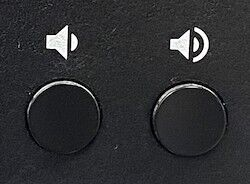
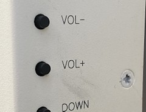
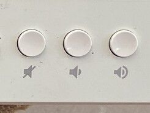
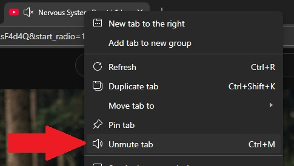
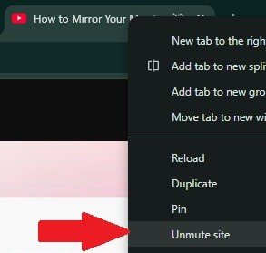

Occasionally, you may encounter audio issues with our boards. If
the sound remains silent even after checking the cables and
restarting the device, please try the following troubleshooting
steps:
Check the Screen Volume. First, ensure that the
screen is not muted (🔇) and that the volume level is not set to
"0." You can adjust the volume using the 🔉 (Volume Down) and 🔊
(Volume Up) buttons located on the screen's frame. These buttons
may look slightly different depending on your screen's
manufacturer and model.



Check the Browser Tab. Next, check the status of
your browser tab. Regardless of which browser you use, it is
possible for a specific website to be muted. To fix this,
right-click on the browser tab at the top of your screen and
select the "Unmute tab" or "Unmute site" option. Edge and Chrome examples.


Open System Settings. Check the sound settings on
your device. You can open the settings menu by pressing
Win + I or by selecting the gear icon from
the Start menu🪟.
Navigate to System > Sound and find the
Output section.
This is what your Output menu will look like:
⚠️ Please feel free to check all the devices listed. One of them will be your screen's audio output or your
docking station, if you are using one.
You shoudl also check Volume mixer menu in the Advance section below Output. Please scroll down until you
find Volume mixer menu below. and cliclk on it.
Now you can se system sound Volume mixer. As you can see her you can change volume level for any app in
list. Make sure that the app you trying to fix sounf in the list and have enought volume level.
💡Quick Tip: You can also adjust the volume levels for specific apps as needed. If you
set an app to 0%, you will not hear any sound from it until you change the setting back.